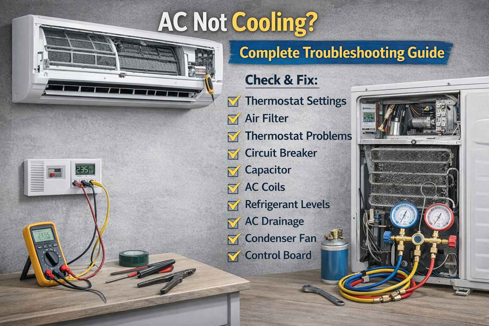

In August 2024, a family from Multan contacted me. Their 1.5 ton Gree AC was running but the room was still hot. The outdoor unit was making a loud noise. I asked them to check the outdoor unit. They found a bird nest inside the unit. The fan was hitting the nest. They removed the nest and cleaned the unit. The AC started cooling again. The father told me "We were about to call a technician who wanted 5000 rupees just to look at it. Thank you for saving us."
Problem: Bird nest blocking outdoor fan | Fix: Remove obstruction
AC not cooling? In Pakistan's extreme summer heat, this is a nightmare. Before you call an expensive technician, work through this guide. Many cooling problems have simple solutions you can fix yourself in minutes.
A professional technician from Faisalabad called me in October 2024. He said "I have a customer with a Samsung AC. The AC turns on but no cooling. The compressor is running but the outdoor fan is not spinning. I changed the capacitor but still no fan." I asked him to check the fan motor wires. He found that a rat had cut the wire. He fixed the wire connection. The fan started working. The customer was happy. The technician said "I learned something new today. Thank you brother."
Problem: Rat cut fan motor wire | Fix: Repair wiring connection
First Thing to Check: When AC is not cooling, first check if it is running at all. Is the indoor fan blowing air? Is the outdoor unit running? Look for any error code on the display or remote.
Problem: Clogged filters block airflow. The evaporator coil gets too cold and freezes. Air cannot pass through.
Symptoms: Weak airflow, AC runs but room stays hot, ice on indoor unit, water leakage.
Solution: Turn off AC. Open front panel. Remove filters. Wash with mild soap and water. Let dry completely. Reinstall. In Pakistani cities, clean every 2 weeks in summer.
Success rate: 40 percent of cooling problems solved by cleaning filters.
Problem: Outdoor unit coils covered with dust and dirt. Heat cannot escape. The AC cannot cool the room.
Symptoms: AC runs but blows warm air. Outdoor unit feels extremely hot. Compressor runs continuously.
Solution: Turn off power to outdoor unit. Remove debris around the unit. Use garden hose to spray water through coils from inside out. For stubborn dirt, use coil cleaner from an appliance store. Do this every 3 months in dusty areas.
Problem: Thermostat set too high, or set to fan-only mode instead of cool mode.
Solution: Check that mode is set to COOL (snowflake icon). Set temperature at least 5 degrees below room temperature. Recommended setting is 24 to 25 degrees Celsius. Set fan to AUTO not ON.
In May 2025, an elderly lady from Rawalpindi called me. She said "My AC is not cooling. The technician said I need a new compressor for 25,000 rupees. I cannot afford that." I went to check. The outdoor unit was completely covered in dust. The coils were black with dirt. I cleaned the coils with water and coil cleaner. The AC started cooling perfectly. The lady was crying with happiness. She said "You saved me 25,000 rupees. May Allah bless you." She gave me fresh orange juice. I still remember that day.
Problem: Dirty outdoor coils | Fix: Professional cleaning
Problem: Refrigerant level is low due to a leak. This is very common in older ACs.
Symptoms: AC runs continuously but blows slightly cool air. Hissing sound from copper lines. Oil stains on connections. Ice on evaporator coils.
Solution: This requires a professional technician. The technician will find and repair the leak, then recharge the gas. Cannot do this yourself.
Warning: Refrigerant work requires special tools and certification. Never attempt DIY.
Problem: The compressor is not running, or running but not compressing properly.
Symptoms: No cooling. Compressor may be hot but not running. Or running but making unusual grinding noises.
Solution: Listen at outdoor unit. If humming but not starting, capacitor may be bad. If seized or failed, compressor replacement needed. Professional diagnosis required.
Problem: The capacitor starts the compressor and fan motors. When it fails, motors will not start.
Symptoms: Outdoor unit humming but fan not spinning. Compressor not starting. AC blows warm air.
Solution: Turn off power. Locate capacitor in outdoor unit (cylindrical component). Look for bulging top or leaking oil. Replace with same rating. Take photo to shop to get correct replacement.
Safety: Capacitors store electrical charge. Discharge safely or call a technician if unsure.
A school teacher from Sialkot messaged me in July 2024. His AC was showing E6 error. The indoor fan was not spinning. He said "I have exams next week. My children cannot study in this heat." I guided him to check the fan capacitor. He had a multimeter. He tested the capacitor. The reading was zero. He bought a new capacitor for 300 rupees. He replaced it himself. The fan started working. The AC cooled again. He sent me a photo of his happy children studying. He said "You are doing great work brother."
Error: E6 | Fix: Replace indoor fan capacitor
Problem: Ice buildup on indoor coils blocks airflow. Usually caused by dirty filters or low refrigerant.
Symptoms: Ice visible on indoor unit. Weak airflow. Water leaking from indoor unit.
Solution: Turn off AC immediately. Let ice thaw completely (2 to 4 hours). Do not chip the ice. Clean or replace air filters. After thawing and cleaning, restart AC. If ice returns quickly, refrigerant may be low. Call a technician.
Problem: The AC capacity is too low for the room size. Very common in Pakistan when people buy cheap undersized units.
Symptoms: AC runs continuously but room never reaches set temperature, especially on very hot days (above 40 degrees).
Solution: Calculate room size: length times width times height times 6 equals BTU needed. For Pakistani climate, add 20 percent. Reduce cooling load by closing curtains, using ceiling fans, and sealing gaps. Consider upgrading to a properly sized AC.
Problem: The outdoor unit is surrounded by plants, walls, or debris that restrict airflow.
Solution: Ensure at least 2 to 3 feet of clearance around the outdoor unit. Trim plants and bushes. Remove any obstructions.
Problem: The outdoor fan is not spinning, so heat cannot escape from the condenser.
Symptoms: Outdoor unit very hot. Compressor runs but fan does not spin. AC blows warm air.
Solution: Turn off power and check if fan spins freely by hand. Check the fan capacitor. If the motor is seized, replacement is needed.
In December 2024, a hotel owner from Murree called me. He said "My ACs are not heating properly. Guests are complaining." I told him that heat pumps need regular cleaning too. He cleaned all outdoor units. He found that one unit had a dead lizard inside blocking the fan. Another unit had a broken fan blade. He replaced the fan blade. The heating improved. He said "I was about to buy new ACs for 500,000 rupees. You saved me a lot of money." He sent me a gift hamper for Christmas.
Problem: Blocked outdoor units and broken fan blades | Fix: Clean and replace damaged parts
Problem: Low voltage or power supply problems. Very common in many Pakistani areas.
Symptoms: AC runs but weakly. Compressor struggles to start. Lights dim when AC starts.
Solution: Check voltage at the outlet. It should be between 190 and 250 volts. Install a voltage stabilizer if fluctuations are common. Check the circuit breaker and wiring.
Problem: The remote is not sending the correct signal. The AC thinks it is in fan mode.
Solution: Check remote batteries. Ensure the mode is set to COOL (snowflake icon). Try using the manual buttons on the AC unit itself to rule out remote problems.
Problem: For central AC systems, leaky ducts lose cool air before it reaches the rooms.
Solution: Inspect visible ducts for gaps or disconnections. Seal leaks with foil tape or mastic sealant. Insulate ducts in unconditioned spaces.
Problem: Windows or doors are letting hot air inside. The AC cannot keep up.
Solution: Close all windows and doors. Use weather stripping on doors. Close curtains or blinds during peak sun hours. Seal gaps around window AC units with foam.
Problem: The AC is more than 10 to 12 years old. Efficiency has decreased. The compressor is wearing out.
Solution: If the AC is old and repair costs are high, consider replacement. New inverter ACs are 30 to 50 percent more efficient. If repair cost is more than 50 percent of a new AC, replace it.
Pakistan Specific Tips: Install a voltage stabilizer. Clean filters every 2 weeks in dusty areas. In extreme heat (45 degrees plus), it is normal for ACs to run continuously. Frequent load shedding stresses the compressor. Check for rodent damage to wiring, especially in outdoor units.
Safety Warning: Always turn off power before any inspection. For refrigerant, compressor, or electrical issues, always call certified technicians. High voltage components can be dangerous.